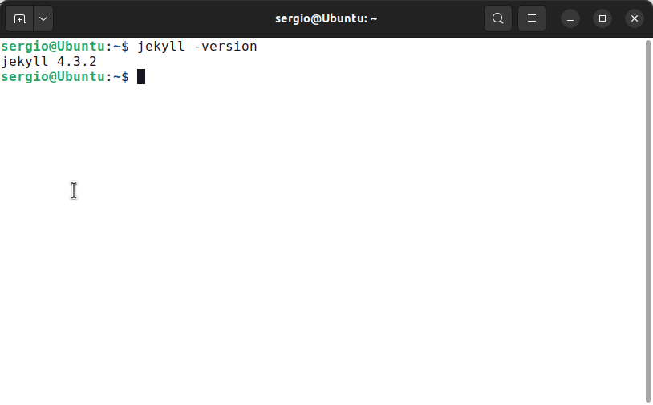
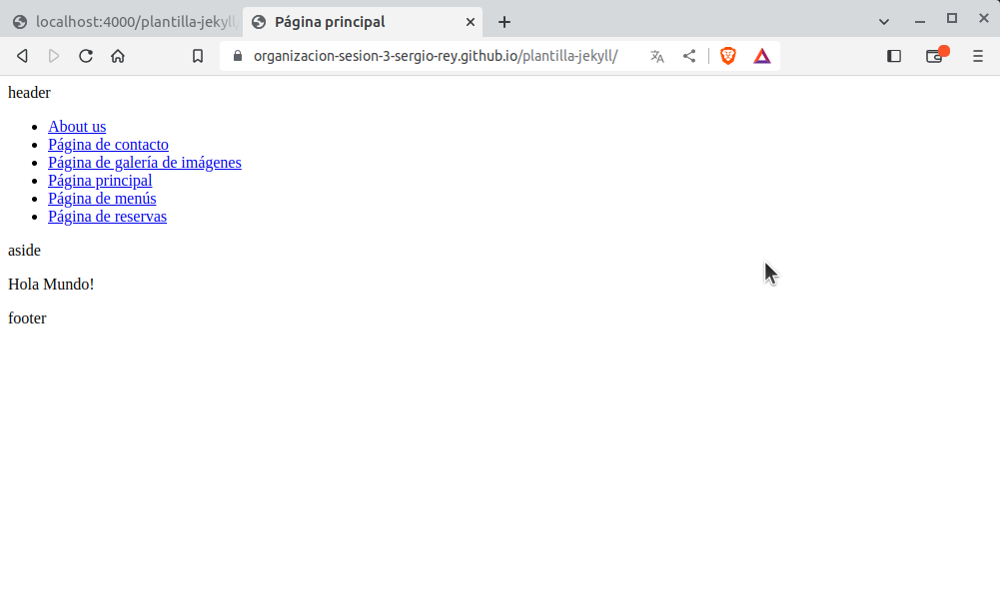

Página de galería de imágenes
Instala Jekyll en tu equipo y haz una captura de pantalla del resultado de ejecutar el comando jekyll -version.

Ejecuta el servidor de test en tu equipo y comprueba que puedes acceder al sitio y navegar por él. Haz una captura de pantalla de una de las páginas cargadas a través del servidor local.
